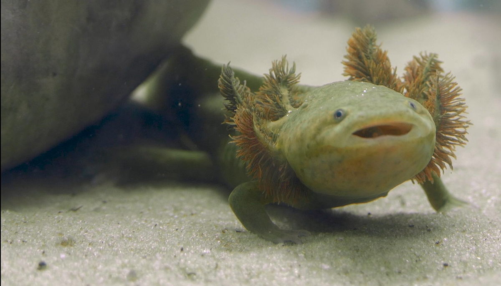
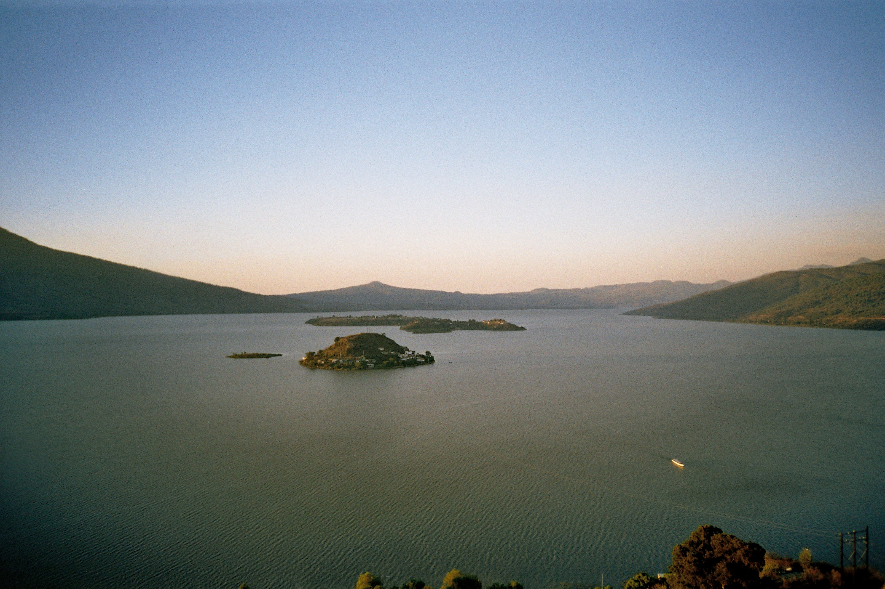

Esta es una especie con utilización comercial, se tiene registros de capturas en el orden de toneladas de 1987 a 1991, actualmente con este fin se ha realizado un trabajo en mercados teniendo para comercializar por semana entre 2 a 3 docenas. Esto nos indica que la especie esta presente, pero el tamaño de la población ha reducido considerablemente

Especie curpulenta de gran tamaño (longitud hocico-cloaca promedio 142 mm y longitud de la cola 118 mm), cabeza redondeada y aplanada dorso-ventralmente, más ancha que el tronco en posición transversal, cola aplanada lateralmente. Color generalmente verde claro, con una mezcla en tonalidades violeta y pardo, color más palido en las extremidades y en la región ventral; en los costados con manchas blanquesinas, en cabeza y dorso, se pueden presentar puntos hundidos, como producto de la presencia de glándulas mucosas en la piel. Los dientes premaxilares-maxilares en número de 63-64). Los dientes vomeropalatinos con continuos con una pequeña diatema separando ambas series. En extremidades anteriores y posteriores con la presencia de una membrana interdigital. Aleta dorsal caudal comienza en un punto de la línea media dorsal, a nivel de estremidades anteriores siendo continua hasta la punta de la cola, presentandose la altura máxima entre las extremidades posteriores. Branquias espesas y en tonalidades obscuras. Pliegue gular visible.
De hábitos acuáticos, utilizando toda la columna de agua del Lago de Pátzcuaro, considerándose epibentónicos. Macroclima Habita en climas templado subhúmedo con lluvias en verano (Cw), templado subhúmedo Cb' (w2), semifríoscon verano fresco largo, con la temperatura media anual entre 5° C y 12° C y poca oscilación entre temperaturas medias mensuales 5° y 7° C , precipitación anual entre 200 y 1 800 mm, lluvias de verano del 5 al 10.2% anual.

La presión por parte de la población humana hacia esta especie es muy alta. La población ha sido alcanzada por el crecimiento urbano en los alrededores del Lago de Pátzcuaro. Tradicionalmente el "achoque", como se llama localmente esta especie ha sido capturado para su venta como alimento en los mercados locales y para la venta directa a los fabricantes del "jarabe de achoque", que se utiliza como un expectorante y el dolor de estómago. Por estudios actuales, se ha encontrado, que la captura comercial ha disminuido en forma alarmante, por lo cual se tendrán que implantar programas de manejo, que mejoren la condición actual de las poblaciones.